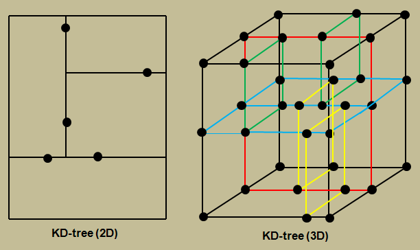

Warehouse Selection for Fastest Dispatch
1.K-d Tree
A k-d tree can be used in warehouse selection by organizing warehouse
locations in a multi-dimensional space (latitude and longitude). When a
new order is placed, the k-d tree allows efficient nearest neighbor
search to quickly find the closest warehouse. This ensures the fastest
possible dispatch and reduces overall delivery time.

Code:
#include <bits/stdc++.h>
using namespace std;
const int k = 2;
struct Node {
int point[k];
Node *left, *right;
};
Node* newNode(int arr[]) {
Node* temp = new Node;
for (int i = 0; i < k; i++)
temp->point[i] = arr[i];
temp->left = temp->right = NULL;
return temp;
}
Node* insertRec(Node *root, int point[], unsigned depth) {
if (root == NULL)
return newNode(point);
unsigned cd = depth % k;
if (point[cd] < root->point[cd])
root->left = insertRec(root->left, point, depth + 1);
else
root->right = insertRec(root->right, point, depth + 1);
return root;
}
Node* insert(Node *root, int point[]) {
return insertRec(root, point, 0);
}
double distanceSquared(int point1[], int point2[]) {
double dist = 0;
for (int i = 0; i < k; i++)
dist += (point1[i] - point2[i]) * (point1[i] - point2[i]);
return dist;
}
void nearestNeighbor(Node* root, int target[], unsigned depth,
Node*& best, double &bestDist) {
if (root == NULL)
return;
double d = distanceSquared(root->point, target);
if (d < bestDist) {
bestDist = d;
best = root;
}
unsigned cd = depth % k;
Node *next = (target[cd] < root->point[cd]) ? root->left : root->right;
Node *other = (target[cd] < root->point[cd]) ? root->right : root->left;
nearestNeighbor(next, target, depth + 1, best, bestDist);
if ((target[cd] - root->point[cd]) * (target[cd] - root->point[cd]) < bestDist)
nearestNeighbor(other, target, depth + 1, best, bestDist);
}
Node* findNearestWarehouse(Node* root, int target[]) {
Node* best = NULL;
double bestDist = DBL_MAX;
nearestNeighbor(root, target, 0, best, bestDist);
return best;
}
int main() {
Node *root = NULL;
// Example warehouse locations (x, y)
int warehouses[][k] = {{3, 6}, {17, 15}, {13, 15}, {6, 12},
{9, 1}, {2, 7}, {10, 19}};
int n = sizeof(warehouses) / sizeof(warehouses[0]);
for (int i = 0; i < n; i++)
root = insert(root, warehouses[i]);
// Customer location
int customer[] = {12, 10};
Node* nearestWarehouse = findNearestWarehouse(root, customer);
cout << "Nearest warehouse to customer at (" << customer[0] << ", " << customer[1] << "):\n";
cout << "(" << nearestWarehouse->point[0] << ", " << nearestWarehouse->point[1] << ")\n";
return 0;
}
Time Complexity
| Operation |
Average |
Worst |
| Search |
O(log n) |
O(n) |
| Insert |
O(log n) |
O(n) |
| Delete |
O(log n) |
O(n) |
Key Inferences
-
K-d Trees quickly find the nearest warehouse to an order’s location
-
This speeds up dispatch by selecting the closest warehouse for
faster delivery.